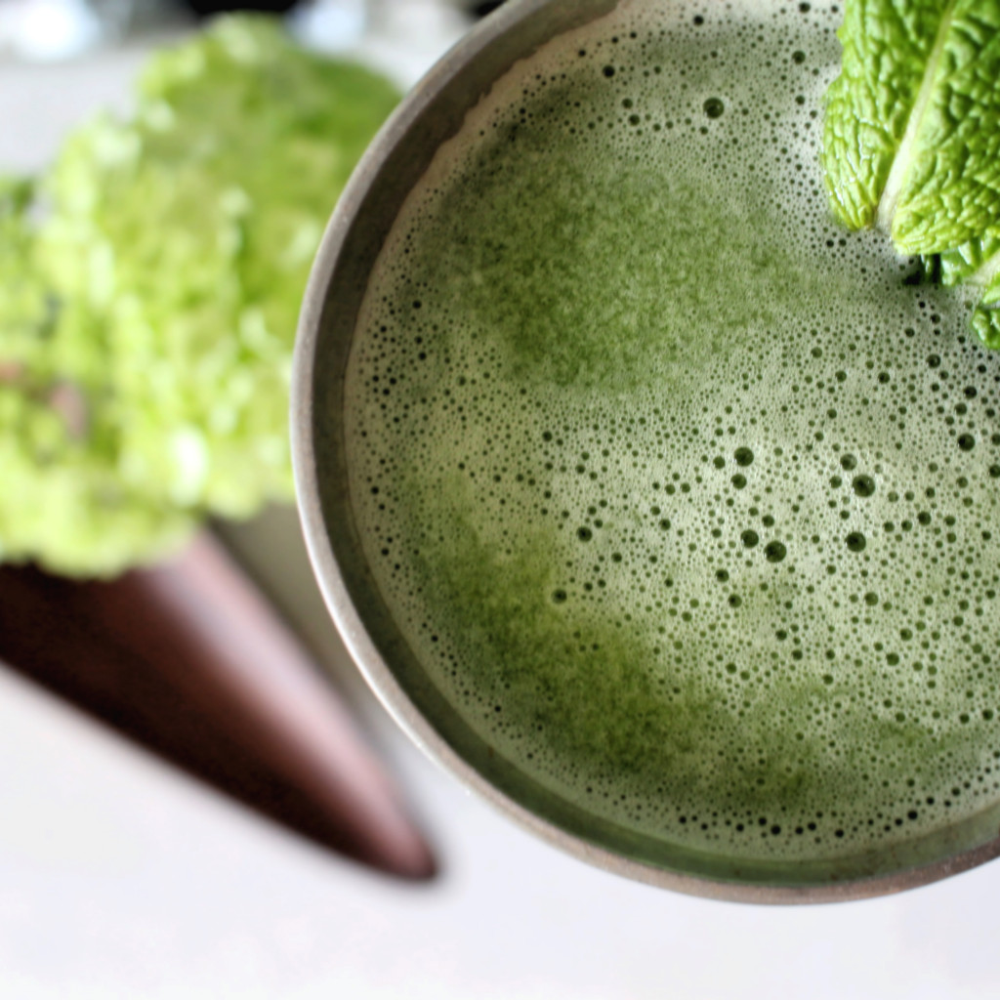

Ent Draught

Desription
Merry and Pippin have awaken and started to drink the water the
nourishes Fangorn Forest. The water not only healed their wounds
and made them feel refreshed, it also made them taller. Merry and
Pippin were the tallest hobbits because of this and supposedly they
were a whopping 3 inches taller than other hobbits.
Ingredients
- 1 - large seedless cucumber
- 1 - granny smith apple
- 6 - leaves of fresh mint
- 1-2 tbsp - honey
- 5 oz - sparkling water
Steps
- Juice your cucumber and apple in a juicer. I left the skin on
just because a lot of the nutrients are in the skin.
- Combine your mind leaves, honey, and a few tablespoons of your
fresh use to a cocktail muddler. Muddle the ingredients until
the mint leaves release all it's goodness.
- Now strain out the mint leaves and add in the rest of the
juice. Top it off with some sparkling water and garnish with
some fresh mint. You can adjust the sweetness with more honey
and enjoy!